Ma cible électronique SQ Air
Les outils d'entraînement, le tir de précision, les contrats et les jeux de la cible électronique SQ Air de Sport Quantum, avec des exercices prêts à l'emploi pour le tireur et l'entraîneur.
Ce que propose la cible
La SQ Air ne se contente pas de compter les points. Elle affiche des visuels d'entraînement (carton blanc, bandes, rond noir…), propose des contrats et des jeux, et garde chaque série en mémoire. De quoi travailler un point technique précis, seul ou avec un entraîneur.
Carton blanc, rond noir, bandes verticales et horizontales : un visuel pour chaque point technique.
Les épreuves ISSF et FFTir, la variante carton (entrée en cible, centrage, cible floue) et les contrats.
26 jeux, dont l'arbre de duel, pour s'entraîner à deux ou en groupe.
Exporter ses résultats et entretenir la cible SQ10.
À voir aussi sur bensport
Le carton blanc
Sans visuel, pas de score à défendre : toute l'attention va au guidon et au doigt. Un carton blanc sans regarder le résultat, c'est l'équivalent du tir sur plaque.
L'échauffement en 3 temps
Échauffement 1 : le lâcher
Échauffement 1 : le lâcher (suite)
Échauffement 2 : lâcher et regard
Échauffements 2 et 3
Échauffement 3 : verrouillage du poignet
Échauffement 3 (suite)
Lâcher sans déstabiliser l'arme
Tireur assis, au plus près de sa position debout, arme posée sur un appui (repose-arme, sac…).
| Exercice | Objectif | Séries | Sur quoi se concentrer | Critère tireur | Critère entraîneur |
|---|---|---|---|---|---|
| 1 | Une pression continue et régulière | 2 × 10 plombs | Un doigt progressif qui ne dérange l’arme ni avant, ni pendant, ni après | Le guidon reste immobile dans le cran | La réaction de l’arme |
| 2 | Régulariser le lâcher continu | 2 × 10 plombs | Pas d’arrêt au point dur ; appuyer jusqu’à la butée en surveillant la visée | La visée reste stable au départ | La tenue après le coup et le groupement |
| 3 | Automatiser le lâcher continu | 3 × 10 plombs | Qualité du lâcher, stabilité, pression maintenue jusqu’à la butée | La visée ne bouge pas, même en butée | La tenue après le coup et le groupement |
Lâcher sans déstabiliser l’arme
La visée sur carton blanc (à sec)
Se concentrer sur le guidon
- Objectif
- Garder le guidon aligné dans le cran.
- Consigne
- Viser en pensant à l’alignement, tenir un temps donné, puis se reposer le même temps.
- Réussi si
- L’œil ne regarde que le guidon et l’attention reste sur son alignement.
| Couleur | Tenue / repos | Répétitions |
|---|---|---|
| Blanc Jaune | 5 s | ≈ 10 |
| Orange Vert | 10 s | ≈ 20 |
| Bleu Marron | 15 s | ≈ 20 |
Se concentrer sur le guidon
Revenir sur le guidon
- Objectif
- Ramener le regard sur le guidon.
- Consigne
- Viser, laisser le regard quitter le guidon 2 secondes, puis revenir et vérifier l’alignement.
- Réussi si
- L’œil refait la mise au point sur le guidon.
| Couleur | Répétitions |
|---|---|
| Blanc Jaune | ≈ 10 |
| Orange Vert | ≈ 20 |
| Bleu Marron | ≈ 30 |
Revenir sur le guidon
Stabilité et concentration
Tenir, puis allonger
- Objectif
- Gagner en stabilité et en endurance.
- Mise en place
- Assis, le bras posé sur un coussin.
- Consigne
- Aligner le guidon dans le cran et tenir quelques secondes avec la minuterie : 5 tenues de 10 secondes, puis allonger peu à peu.
- Réussi si
- Le lâcher ne fait pas bouger le guidon dans le cran.
Stabilité sur carton blanc
Stabilité et concentration
Allonger la tenue
Le rond noir (visuel non zoné)
Le visuel noir sans zones montre l'impact et le groupement, mais pas les points. On se rapproche du tir réel sans « faire un score ».
Analyser sa position et la qualité du geste à partir du groupement.
Plaque pour éveiller le lâcher, carton blanc pour la visée, rond noir pour la séquence complète.
Quelques tirs, lecture du groupement, clics, nouveau test : sans pression du score. Régler par clics
Mémoriser les organes de visée au départ du coup. L'annonce
Lâcher sur le rond noir
- Objectif
- Lâcher sans modifier la ligne de visée.
- Consigne
- Tirer sur le rond noir sans regarder le résultat, attention sur le guidon.
- Variantes
- A : 10 tirs, à balles ou à sec · B : 20 tirs en alternant réel et à sec · C : 30 tirs en alternant.
- Réussi si
- Le lâcher ne déplace pas le guidon dans le cran.
Carton blanc ou rond noir ?
- Objectif
- Repérer ce qui change entre les deux cibles.
- Consigne
- Alterner carton blanc et rond noir ; noter les différences de lâcher.
- Variantes
- Mêmes séries A, B, C.
- Réussi si
- Le tireur perçoit la différence entre carton blanc et visuel.
Lâcher sur visuel non zoné
La bande verticale (et les deux bandes)
Une bande noire verticale, ou une bande blanche entre deux bandes noires, isole l'axe gauche-droite. On règle la difficulté par la largeur de la bande : en général celle du guidon, plus large si le tireur bouge beaucoup. C'est le centre du guidon qui doit rester dans la bande, pas le guidon entier.
On y travaille : le verrouillage du poignet, l'équilibre (oscillations avant-arrière), une descente droite, un geste d'attaque rectiligne. Et, en second plan, le lâcher dans le mouvement : le tir immobile n'existe pas.
1. Verrouiller le poignet
- Pour qui
- Les tireurs qui maîtrisent déjà leur bougé.
- Consigne
- Ne penser qu’au centre du guidon, accepter le bougé, le garder dans la bande, puis lâcher. 10 tirs par série, en haute concentration.
- Réussi si
- Au lâcher, le centre du guidon est au centre du cran et dans la bande ; les impacts sont dans la bande.
| Couleur | Largeur de bande | Séries |
|---|---|---|
| Blanc Jaune | Plus large que le guidon | 2 |
| Orange Vert | Égale au guidon | 4 |
| Bleu Marron | Un peu plus étroite | 5 |
2. Sentir son équilibre
- Pour qui
- Un poignet déjà assez verrouillé.
- Consigne
- Monter le bras en passant dans la bande, pause en haut, redescendre dans la bande. 10 fois sans tirer, puis 3 × 10 tirs en lâchant à la hauteur choisie.
- Réussi si
- Le tireur ressent et observe ses oscillations par rapport à la bande. L’entraîneur peut filmer le profil depuis l’arrière.
| Couleur | Largeur de bande |
|---|---|
| Blanc Jaune | Plus large que le guidon |
| Orange Vert | Comparable au guidon |
| Bleu Marron | Plus étroite que le guidon |
3. Maîtriser la descente
- Vérifier sa position
- Monter au-dessus de la cible, pause (tassement), descendre vers la bande, 3 fois. Si la descente sort de l’axe, reprendre sa position, au besoin les yeux fermés.
- Descente en cible
- Descendre lentement dans la bande, centre du guidon dans le cran, lâcher à des hauteurs différentes, sans regarder la cible. 10 tirs par série.
- Réussi si
- La descente est lente et maîtrisée ; les impacts sont dans la bande.
| Couleur | Largeur de bande | Séries |
|---|---|---|
| Blanc Jaune | Plus large que le guidon | 2 |
| Orange Vert | Égale au guidon | 4 |
| Bleu Marron | Un peu plus étroite | 4 |
4. Le geste d’attaque
- Montée sans tir
- Bras à 45°, pause, puis montée dans la bande. 10 gestes par série.
- Montée et lâcher
- Même geste en appuyant sur la détente pendant la montée, puis lâcher. 10 tirs par série.
- Réussi si
- Le centre du guidon monte dans la bande ; l’impact est dans la bande.
| Couleur | Montée sans tir | Montée et lâcher |
|---|---|---|
| Blanc Jaune | 3 séries, montée dans la bande | 3 séries, geste lent |
| Orange Vert | 5 séries, vitesse maîtrisée | 3 séries, geste maîtrisé sans être lent |
| Bleu Marron | 5 séries, maîtrisée et assez rapide | 5 séries, geste performant |
La bande horizontale
Ici, c'est l'axe haut-bas qui est isolé. Deux rappels : on regarde le guidon, pas la cible ; et on choisit une bande proche de la hauteur de la zone du 7 (59,6 mm) pour travailler en conditions réelles.
La marge de blanc
- Objectif
- Évaluer sa marge de blanc sans la regarder.
- Consigne
- Faire sa séquence normalement, regard sur le guidon, et juger la marge à la luminosité.
- Réussi si
- Les impacts tombent dans la bande, à la hauteur de la marge choisie.
L’œil sur le guidon
- Objectif
- Rester concentré sur le guidon.
- Consigne
- Agrandir ou réduire volontairement la marge de blanc pendant la séquence, sans quitter le guidon des yeux.
- Réussi si
- Les impacts montent ou descendent dans le sens du changement de marge.
Pour aller plus loin : tirer dans une bande blanche entre deux noires comme si elle était noire ; réduire la bande pour obliger à adapter la marge ; s'adapter aux changements de lumière.
Coordination et cible qui disparaît
Dans la SQ Air, l'écran des outils d'entraînement présente six vignettes : on touche celle de l'outil voulu, on le règle avec « Personnaliser », puis on lance avec « Démarrer ». À droite, la prévisualisation montre les impacts numérotés.
La coordination
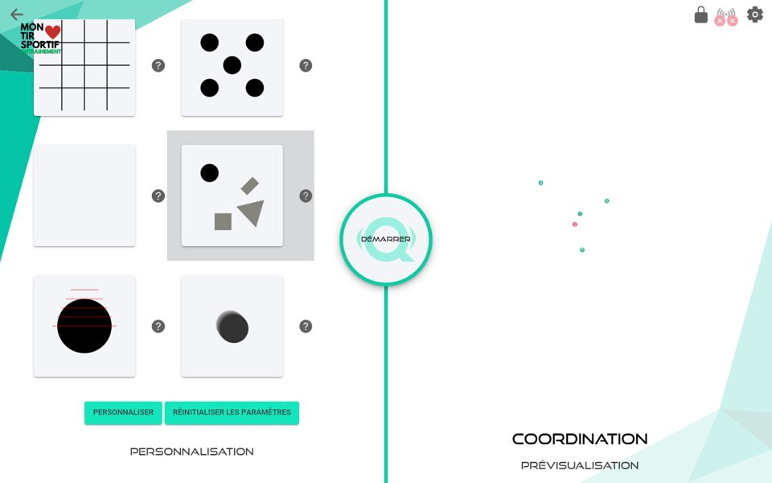
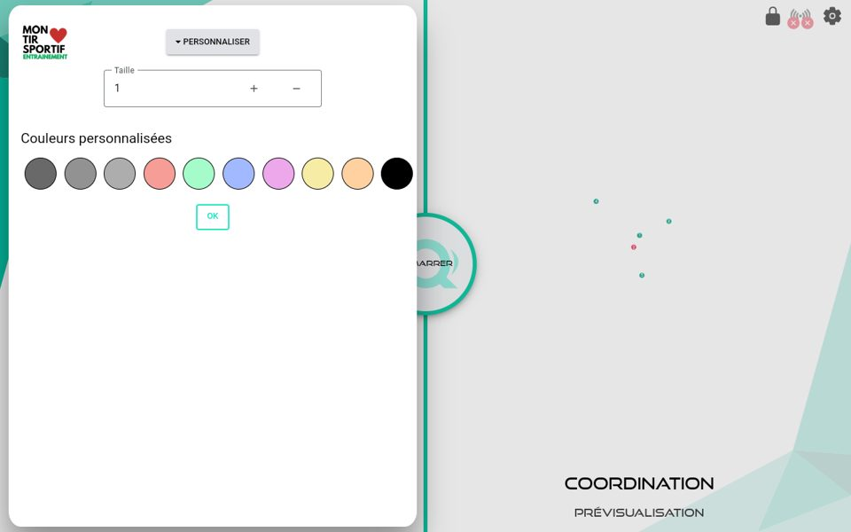
La cible qui disparaît
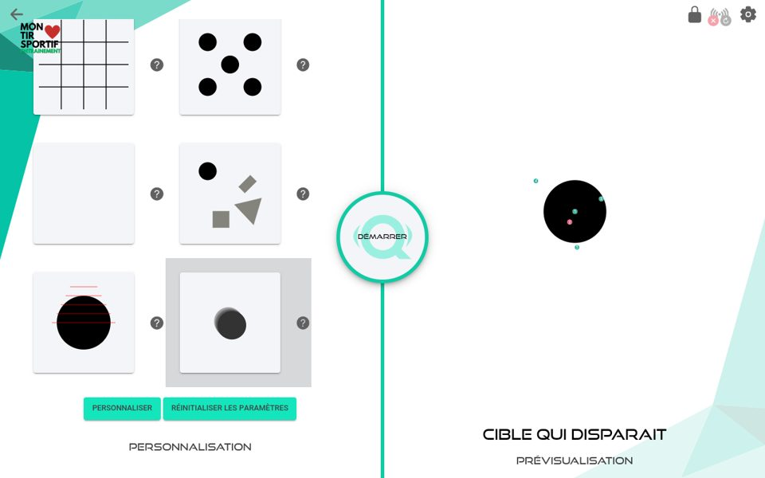

Tenir sans voir
- Principe
- La cible s’affiche puis s’efface : on vise pendant qu’elle est visible, et on tire une fois qu’elle a disparu.
- Ce qu’on travaille
- Tenir sa position et sa visée sans le repère du visuel ; faire confiance à sa tenue plutôt qu’à la cible.
- Réussi si
- Les impacts restent groupés sur l’emplacement de la cible, même tirés « à l’aveugle ».
Entrée en cible, centrage, cible floue
En tir de précision, la SQ Air propose les épreuves ISSF et FFTir (pistolet 10 m, pistolet standard 10 m, pistolet vitesse 3/7…) et une « variante carton » avec des visuels d'entraînement.
L'entrée en cible
Maîtriser la descente du bras, du dessus de la cible jusqu'à la zone de visée, guidon centré dans le cran. Un cône gris guide la trajectoire.
| Couleur | Consigne | Séries | Réussi si |
|---|---|---|---|
| Blanc Jaune | Bras levé, organes de visée au-dessus de la cible. Descendre doucement, guidon au milieu du cran, ralentir en traversant le visuel pour arriver lentement dans la zone de visée. | 2 × 10 plombs | Guidon dans le cran pendant la descente, vitesse contrôlée ; pour l’entraîneur, un geste de plus en plus régulier. |
| Orange Vert | Monter jusqu’à un repère choisi, corriger le centrage, puis descendre dans le cône gris. Cône large (60°) au début, à réduire dès que le geste est maîtrisé. Estimer sa marge de blanc. | 3 × 10 plombs | Rester dans le cône jusqu’à la zone de visée. Si la descente suit le bord du cône, se replacer pour descendre dans son axe ; un SCATT aide à voir la trajectoire. |
| Bleu Marron | Descente régulière. Commencer à 50°, puis retirer 10° après chaque série réussie (10 plombs sur 10 dans le cône). | 3 × 10 plombs | Rester dans le cône jusqu’à la zone de visée, guidon dans le cran. |
Variante : les mêmes exercices, en entrant par le bas de la cible.
Entrée en cible
Améliorer son entrée en cible
Le centrage
Le centrage : zone de visée
Carton de centrage pistolet
Carton de centrage carabine
La cible floue
Elle se choisit dans le tir de précision, menu « Choisissez une variante de carton », parmi d'autres variantes comme les deux bandes ou l'éclairage asymétrique.


Tirer quand la vue se brouille
- Principe
- Le visuel s’affiche flou, pour simuler une vision qui n’est pas claire : fatigue, larmes, lumière, verres embués.
- Ce qu’on travaille
- Rester sur un guidon net et faire confiance à sa visée, même quand la cible ne l’est pas. C’est d’ailleurs la règle : guidon net, cible floue.
- Réussi si
- Le groupement reste proche de celui obtenu sur une cible nette.
La cible floue
Les contrats SQ Air
Des défis à se fixer en tir de précision. Ils se lancent depuis la discipline Tir de précision (« Démarrer »).
La série la plus longue
- Principe
- Rester le plus longtemps possible au-dessus d’un score plancher. On travaille la concentration : éviter le mauvais coup qui coûte des points en match.
- 1. Sa moyenne
- Score habituel ÷ nombre de tirs. Exemple : 510 points sur 60 tirs = 8,5 par tir.
- 2. Son plancher
- Un peu en dessous ou proche de la moyenne, par exemple 8.
- 3. La série
- Commencer par 10 coups, puis allonger peu à peu.
Le contrat Points
Le défi : atteindre 5 ou 10 points en le moins de coups possible. Selon la valeur de l'impact, chaque coup rapporte des points… ou en retire.
| Points | Facile | Moyen | Difficile |
|---|---|---|---|
| +2 | 10,9 à 8,4 | 10,9 à 9,4 | 10,9 à 10,4 |
| +1 | 8,3 à 8,0 | 9,3 à 9,0 | 10,3 à 10,0 |
| 0 | 7,9 à 7,4 | 8,9 à 8,4 | 9,9 à 9,4 |
| −1 | 7,3 à 7,0 | 8,3 à 8,0 | 9,3 à 9,0 |
| −2 | 6,9 et moins | 7,9 et moins | 8,9 et moins |
Lancer le contrat
- Tir de précision › Discipline › onglet Entraînement › rubrique Contrats › Points. Le « ? » affiche la règle.
- Carton : Pistolet 10 m ; variante de carton : aucune.
- La clé à côté de la discipline ouvre les réglages ; puis Démarrer.
Régler la difficulté
- Le curseur « Facile / Difficile » : on règle la taille du cercle vert sur la taille moyenne de son groupement ; la cible calcule alors les bons seuils.
- « Personnaliser » : on fixe soi-même le score minimum (−10 par défaut) et les seuils des tranches +2, +1, 0 et −1.
- On peut ajouter le réglage à ses favoris ou restaurer les paramètres d'usine.
- Si l'on change de carton après coup, il faut refaire le réglage.


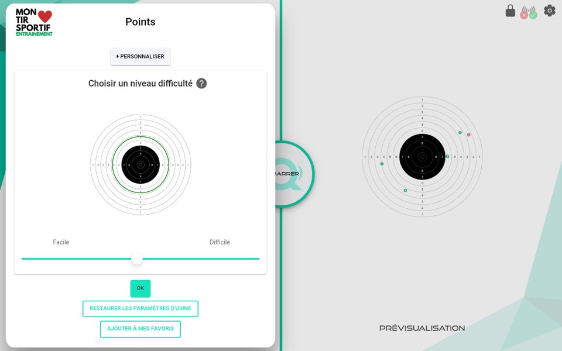

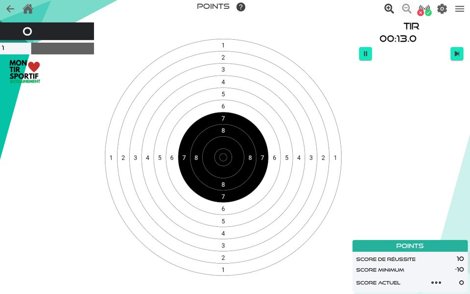
Le contrat Boîte vide
Le défi : on remplit une boîte de plombs, un par objectif à atteindre, puis on la vide en le moins de coups possible. Chaque coup qui atteint le score choisi retire un plomb ; le nombre de plombs restants s'affiche sur la boîte.
Lancer le contrat
- Tir de précision › Discipline › onglet Entraînement › Contrats › Boîte vide. Le « ? » affiche la règle.
- Carton : Pistolet 10 m ; variante de carton : aucune.
- La clé ouvre les réglages ; puis Démarrer.
Les réglages
- Score minimum : la valeur qu'un coup doit atteindre pour retirer un plomb de la boîte.
- Nombre de plombs : combien de fois il faut atteindre cet objectif (10 par défaut).
- Pénalités (à activer) : en dessous d'un second score minimum, des plombs sont remis dans la boîte. Exemple : sous 8, on rajoute 1 plomb.
- Ou le curseur Facile / Difficile, calé sur la taille de son groupement, comme pour le contrat Points.
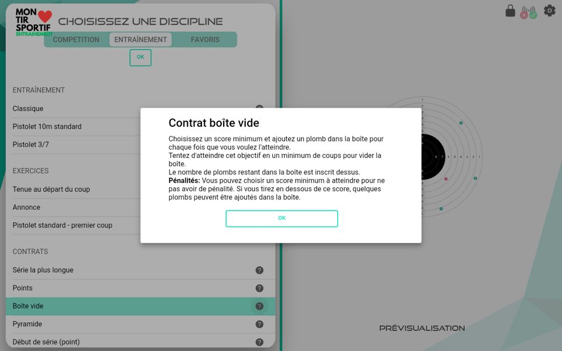


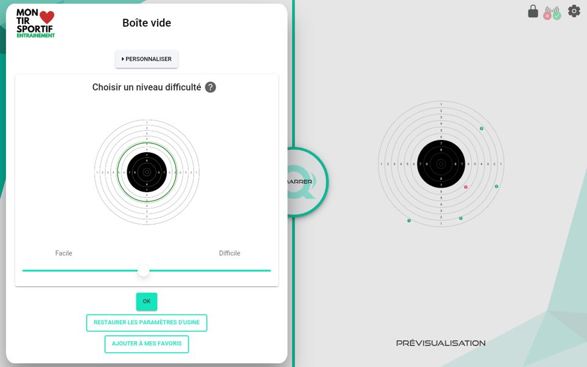
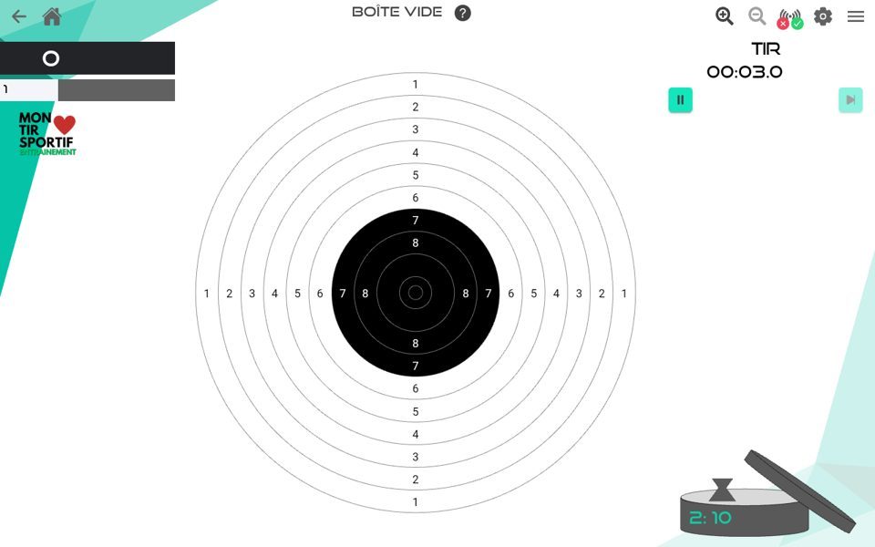
Le contrat Pyramide
Le défi : vider tous les étages d'une pyramide en atteignant les scores qui y sont inscrits. Chaque étage est au moins aussi exigeant que le précédent. On se met ainsi au défi soit à chaque coup, soit sur un bilan de plusieurs coups.
Lancer le contrat
- Tir de précision › Discipline › onglet Entraînement › Contrats › Pyramide. Le « ? » affiche la règle.
- Carton : Pistolet 10 m ; variante de carton : aucune.
- La clé ouvre les réglages ; puis Démarrer.
Les réglages
- Hauteur de la pyramide : le nombre d'étages (3 ou 5 sur les captures).
- Le score de chaque étage : par exemple 7, 8, 9, 10 puis 10,2 pour une pyramide de 5 étages.
- Mode « Classique » ou « De bas en haut » : « de bas en haut » augmente l'exigence au fil du contrat.
- Ou le curseur Facile / Difficile, calé sur la taille de son groupement.
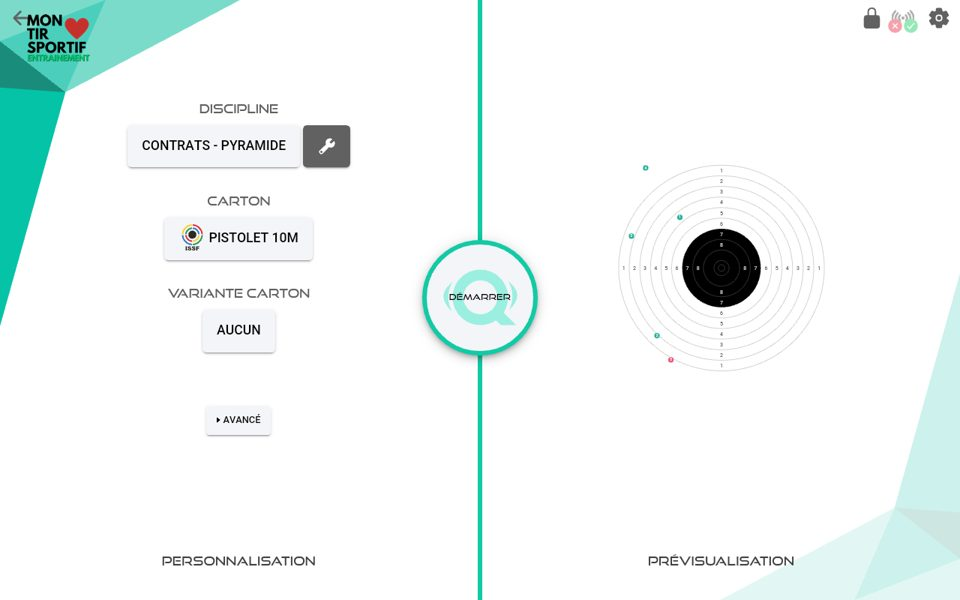

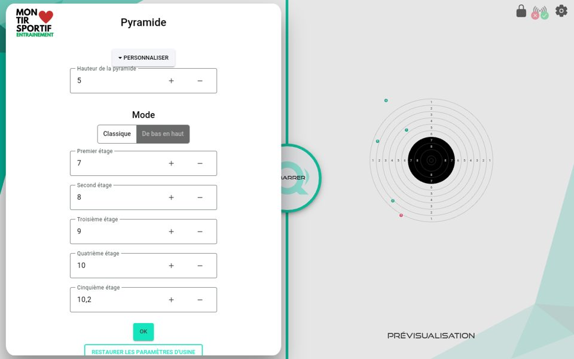


Le contrat Pyramide en vidéo
Le contrat Début de série (point)
Le défi : bien commencer un match. On se fixe deux objectifs : un score total pour la série, et un point minimum à atteindre plusieurs fois dans les premiers coups. Exemple donné par la SQ Air : tirer 95/100, avec au moins trois 10 dans les cinq premiers tirs.
Lancer le contrat
- Tir de précision › Discipline › onglet Entraînement › Contrats › Début de série (point). Le « ? » affiche la règle.
- Carton : Pistolet 10 m ; variante de carton : aucune.
- La clé ouvre les réglages ; puis Démarrer. Le contrat se tire en mode match.
Les réglages
- Objectif de la série : le score total visé (100 sur les captures).
- Début de la série, score minimum : le point à atteindre en début de série (6 ou 10 sur les captures). Sur l'écran des objectifs, cela donne par exemple « 3 × 10,0 / 5 » : trois coups à 10 ou plus dans les cinq premiers.
- Utilisation des décimales : pour compter le point minimum au dixième.
- Ou le curseur Facile / Difficile, calé sur la taille de son groupement.


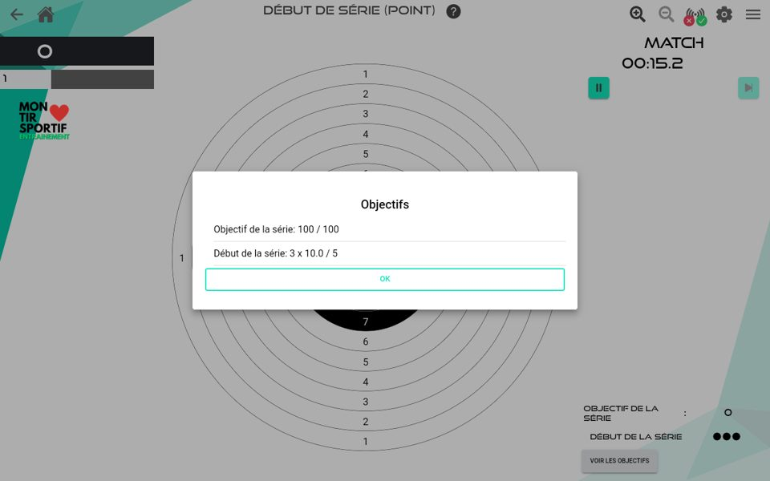
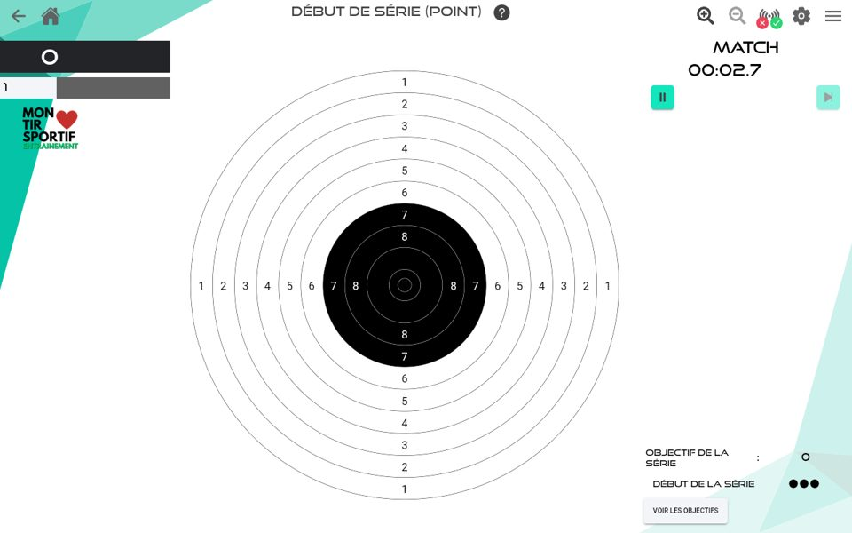
Les autres contrats
À compléter.
À compléter.
Les 26 jeux et l'arbre de duel
26 jeux, en mode Simple ou Avancé, pour varier les séances seul, à deux ou en groupe. Le « ? » sous chaque jeu en affiche la règle.
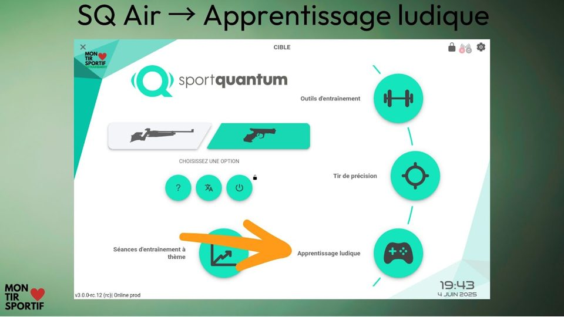
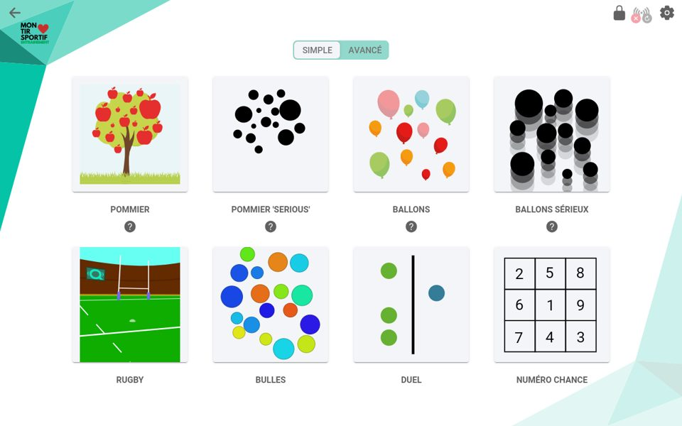
Viser un point précis
Un endroit exact à toucher : la précision de la visée et la qualité du lâcher.
Toucher le milieu du ballon pour l'envoyer dans le but.
Viser le centre du ballon pour le faire passer entre les perches.
Tirer sur la bouteille comme au Far West : l'endroit touché décide de la façon dont elle se brise.
Toucher la fine ficelle qui retient les ballons, sans toucher les ballons. Plus difficile qu'il n'y paraît.
Chaque secteur rapporte le nombre affiché : atteindre exactement le total choisi.
La cible grossit ou rétrécit selon qu'on la touche ou non. But : finir avec la plus petite cible.
Toucher le plus de pommes avec le moins de plombs. Combien de points en 10 coups ? Combien de plombs pour toutes les pommes ?
Le pommier en noir et blanc, plus proche du visuel d'une cible : mêmes défis.
Suivre une cible qui bouge
La cible change de place ou se déplace : anticiper, puis coordonner le déclenchement.
La cible n'apparaît jamais au même endroit : ajuster son point de visée à chaque fois.
La cible se déplace : anticiper sa trajectoire et déclencher au bon moment.
Une cible traverse l'écran d'un côté à l'autre : la toucher sur son chemin.
Les pipes défilent, comme à la fête foraine.
Faire tomber les ballons, en anticipant leur trajectoire, y compris les plus petits et les plus rapides.
Les ballons en noir et blanc : des ronds noirs à faire tomber.
Faire éclater les bulles. Moins il en reste, plus elles bougent : le jeu se corse vers la fin.
Toucher toutes les palettes de la roue. Une palette touchée sur le côté la fait tourner plus vite.
Enchaîner les coups
Beaucoup de cibles à faire disparaître : garder un geste propre sans se précipiter.
Faire tomber toutes les briques au plus vite. La balle aide ; les rouges explosent, les bleues demandent deux coups.
Toucher toutes les boules pour faire apparaître les cadeaux.
Faire disparaître les cartes pour gagner.
Jouer à deux ou plus
Le plaisir du jeu et la gestion de la pression face à un adversaire.
Deux tireurs, bleu et orange : renvoyer toutes les palettes dans le camp adverse. Voir la fiche détaillée.
Chaque joueur déplace sa raquette en tirant sur sa moitié du plateau. Les deux tirent en même temps, aussi vite qu'ils veulent.
Chacun son tour, tirer sur la colonne choisie. Le premier qui aligne 4 pièces gagne.
Chacun son tour, tirer sur une case pour y poser sa croix ou son rond. La bordure indique qui joue.
Partir d'un score et arriver exactement à 0 avant les autres, en plusieurs tirs par volée. Un score négatif est inversé.
Plusieurs flèches par volée : le meilleur total à la fin de toutes les volées gagne.
Viser les meilleures zones de la roue. « Jackpot » vole les points d'un adversaire, « Banqueroute » fait tout perdre. Le plus de points après le dernier tour (10 par défaut).
L'arbre de duel
La règle
- Le jeu
- Deux tireurs face à un arbre de cibles de couleur.
- À chaque impact
- La cible touchée passe dans le camp adverse.
- Victoire
- Le premier qui n’a plus aucune cible de son côté gagne.
Ce qu'il fait travailler
- La maîtrise de soi : à niveau égal, gagne celui qui garde son sang-froid et la qualité de son geste malgré la pression.
- Le placement : les deux tireurs ne sont pas dans le même axe pour une même cible.
- La vitesse : ne pas confondre vitesse et précipitation.
- Le plaisir d'un jeu à deux.
Arbre de duel : démarrer
Arbre de duel : les intérêts
Arbre de duel en match
Arbre de duel (2)
Exporter ses résultats et entretenir la cible
Exporter mes résultats
Récupérer les résultats d'un entraînement ou d'un match sur la SQ10, pour les analyser ou les partager.
Conserver ses résultats (QR code)
Exporter et partager ses résultats depuis la SQ Air 10
L'entretien de la SQ10
Les gestes d'entretien de la cible, en vidéo.
Entretien SQ10 (1)
Entretien SQ10 (2)
Entretien SQ10 (3)
Entretien SQ10 (4)
Entretien SQ10 (5)
Repris du site MTS Entraînement (entrainement.montirsportif.fr), rubrique « Ma cible électronique ». Les conseils sont donnés à titre d'exemple et ne remplacent pas un entraîneur.
MonTirSportif – https://pistol.montirsportif.com/ma-cible-electronique.html